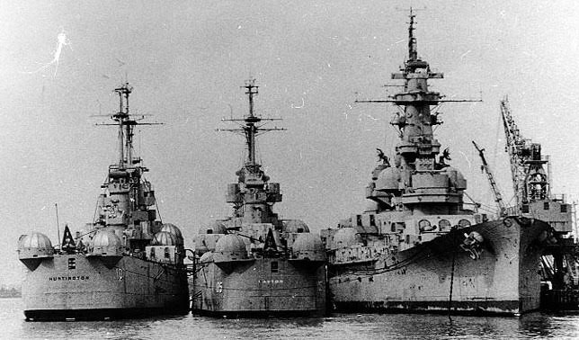
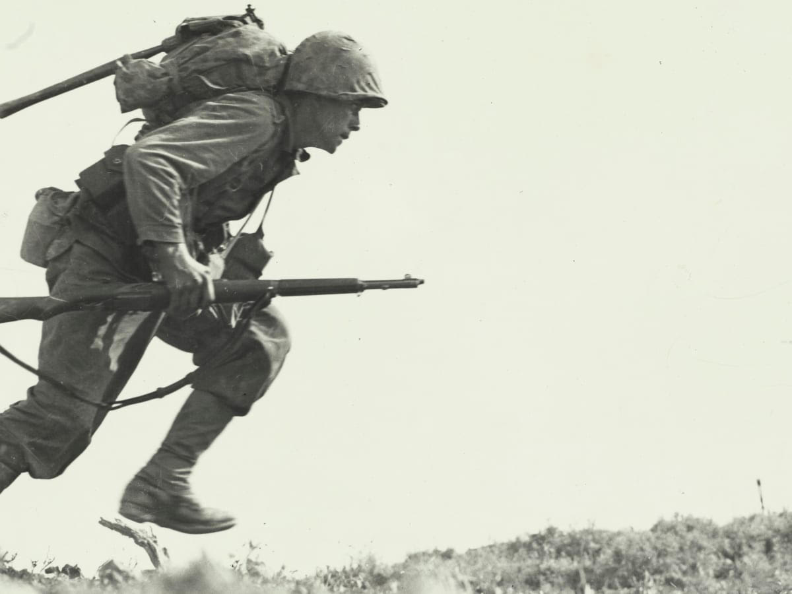
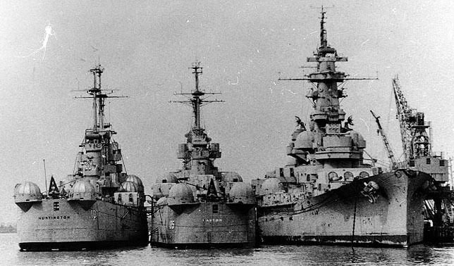
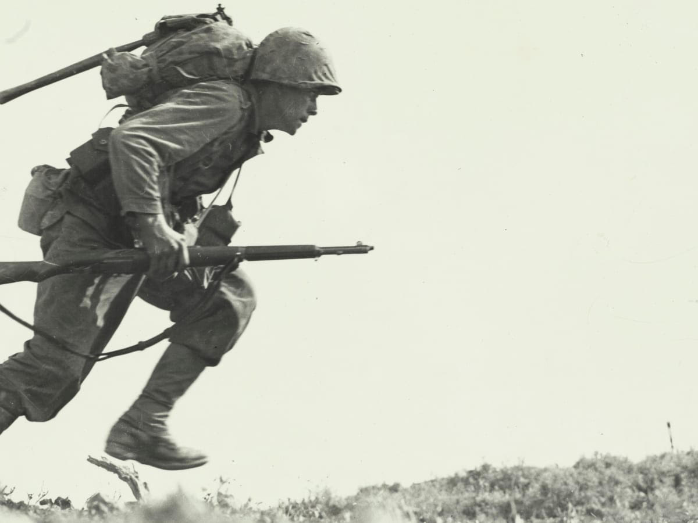

Hemsidans innehåll
Denna hemsidan lär dig om den tekniska utvecklingen inom krigsföring under andra världskriget. Därmed, allt från vapen på land, luft och havet.
Andra världskriget (1939 - 45) är den hittills mest omfattande och blodigaste konflikten i människans historia. Under kriget miste mellan 50 och 60 miljoner livet, varav ca 13 miljoner i förintelsen. Själva kriget, utspelade sig runt om i hela världen och omfattade både små och stora konflikter. En avgörande faktor kring om man var framgångsrik på slagfältet, var den tekniska utrustningen man hade tillgång till.
Lika länge som det har funnits människor har det funnits vapen av olika former. Senast för 200 år sedan under 1800-talet, i samband med den industriella revolutionen, utvecklades nya vapen i takt med andra tekniska framsteg, varav framsteg som lade grunden för den summa människor som miste livet under andra världskriget. De mynningsladdade handledsvapnen byttes ut mot vapen med magasin som laddades om genom mantelrörelse (en repeterfunktion). De helautomatiska vapnen, så som maskingevär, som skjuter en serie skott utan avbrott, började alltmer dyka upp under senare delen av 1800-talet och hade dessutom en avgörande roll under andra världskriget. Men den vapentekniska utvecklingen under industriella revolutionen, kom inte att vara i närheten av den utveckling som andra världskriget orsakade. Helt nya vapen såg dagens ljus då de krigande länderna lade enorma resurser och allt sitt tekniska kunnande för att få fram vapen med största möjliga dödlig effekt, på såväl, land, som hav och luften.
Här kan du läsa lite om den tekniska utvecklingen som krigsföring på hav, luft och land fick under andra världskriget.